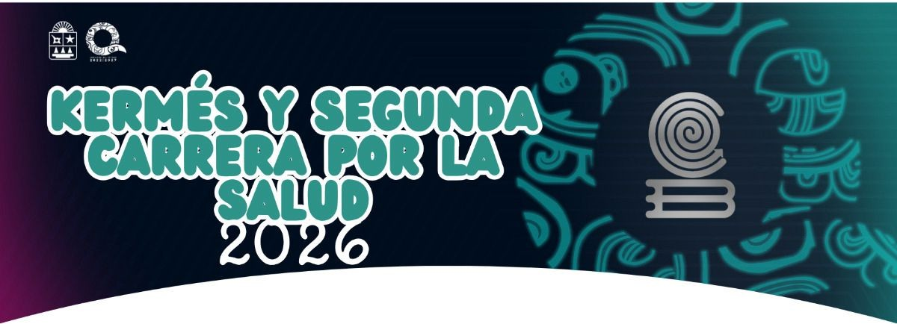
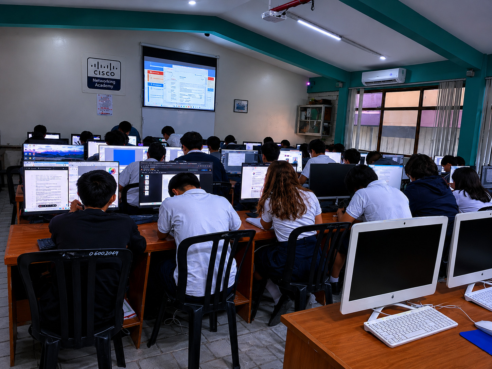

Hábitos Saludables
Descubre cómo una buena alimentación, el ejercicio y el descanso pueden mejorar tu bienestar físico y mental. Adoptar hábitos saludables te ayudará a tener más energía, prevenir enfermedades y sentirte mejor cada día.
Conoce más
Carrera por la Salud 2026
Participa en esta gran actividad enfocada en promover la salud, el ejercicio y la convivencia. Únete con amigos y familiares para vivir una experiencia llena de energía y bienestar.
Descubre la convocatoria
Capacitación: Tecnologías De La Información Y La Comunicación
Unete a está capacitación donde aprenderas sobre el uso que se le puede dar a la tecnología en la vida diaria, así como su aplicación en el campo laboral desde el uso de software básico como word hasta el uso de C++ para programación y GIMP para diseño gráfico.